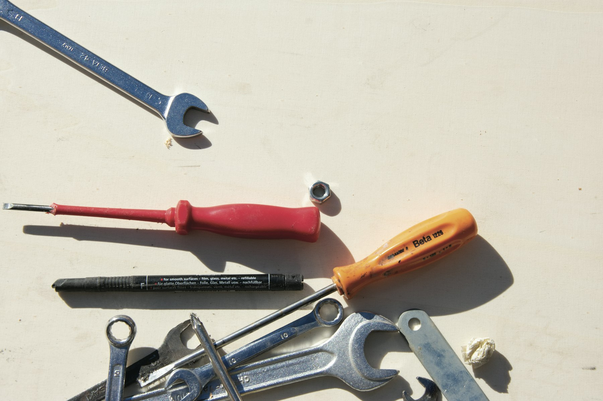

TL;DR
Automating daily work with AI tools can boost productivity. Identify repetitive tasks, choose the right tools, implement solutions, train for optimization, and measure success.

Identifying Repetitive Tasks
Start by listing your daily tasks. Identify which ones are repetitive and can be automated. Common examples include data entry, scheduling appointments, and responding to emails. Once you've compiled this list, categorize the tasks by frequency and time consumption. Focus on the tasks that eat up the most time and are done regularly. This will help you pinpoint where AI can make the most significant impact in your daily work. Engaging tools like time trackers can also provide insights into your workflow. They can help you visualize how much time you spend on each task, making it easier to identify candidates for automation.

Choosing the Right AI Tools
Next, research various AI tools tailored to your needs. For example, if email management is consuming your time, consider tools like SaneBox or Clean Email. For project management, think about tools like Trello or Asana, which offer automation features to streamline task assignments and updates. Chatbots can be useful for customer service, handling inquiries without human interaction. Read reviews and compare features to find the best tools. It may help to start with free trials before making a financial commitment. This way, you can evaluate which tools fit well with your workflow and meet your automation needs.
Implementing AI Solutions
Once you've selected your AI tools, the next step is implementation. Begin with one tool at a time to avoid becoming overwhelmed. Follow the setup instructions provided by the tool to integrate it effectively into your daily routine. For instance, if you're using a scheduling tool, sync it with your calendar and set your availability. Make sure to communicate any changes to your colleagues to ensure smooth transitions. During the initial phases, monitor the tool's performance closely. Tweak settings as needed to maximize efficiency. This will give you a better understanding of how AI can completely transform your workflows.
Training and Optimization
As you become familiar with your AI tools, consider undergoing training for yourself or your team. Many tools offer tutorials and community forums, which can provide invaluable knowledge and tips. Engage in webinars or workshops focused on AI applications in your field. The more adept you become, the better you'll be at leveraging AI for automation. Additional optimization can include setting up workflows that connect multiple tools. For example, automating data transfer between your email and project management software can reduce downtime and errors. The goal is to refine processes continuously.
Measuring Success
Finally, regularly measure the success of your automation efforts. Set clear benchmarks for tasks before and after implementing AI tools. This could be time saved, increased task completion rates, or improved accuracy in your work. Use analytics features available in most AI tools to track performance metrics. Check in monthly to review how well the automation is working and whether it meets your expectations. If you find certain tools not delivering desired results, don't hesitate to seek alternatives. The world of AI is continually evolving, so remain adaptable and open to new tools and strategies.
FAQ
How do I know what tasks to automate?
Start by listing repetitive tasks, looking for those that consume the most time.
Are there free AI tools for automation?
Yes, many tools offer free versions with limited features; you can start there.
Can AI tools really save me time?
Absolutely, when used correctly, AI can significantly reduce the time spent on mundane tasks.
What if I struggle with implementing AI tools?
Consider seeking training resources or tutorials specific to the tools you're using.
Is there ongoing support for AI tools?
Most AI tools provide robust customer support and active community forums for assistance.
Photo credits
- Photo 1: Jesus Hilario H. on Unsplash (https://unsplash.com/@jesushilarioh) (https://unsplash.com/photos/silver-imac-with-magic-mouse-and-keyboard-5v69Vl62NCM)
- Photo 2: Elena Rouame on Unsplash (https://unsplash.com/@roum) (https://unsplash.com/photos/red-and-silver-hand-tool-9JU2CKqtw0M)
- Photo 3: Desola Lanre-Ologun on Unsplash (https://unsplash.com/@disruptxn) (https://unsplash.com/photos/black-acer-laptop-computer-USp4Gzr-Hdw)
- Photo 4: Robert Stemler on Unsplash (https://unsplash.com/@robertstemler) (https://unsplash.com/photos/black-and-white-zebra-textile-VtMdZFGCWuI)
- Photo 5: AN LY on Unsplash (https://unsplash.com/@ezfinder) (https://unsplash.com/photos/man-sitting-next-to-woman-leaning-on-white-table-QooESgXRg8w)